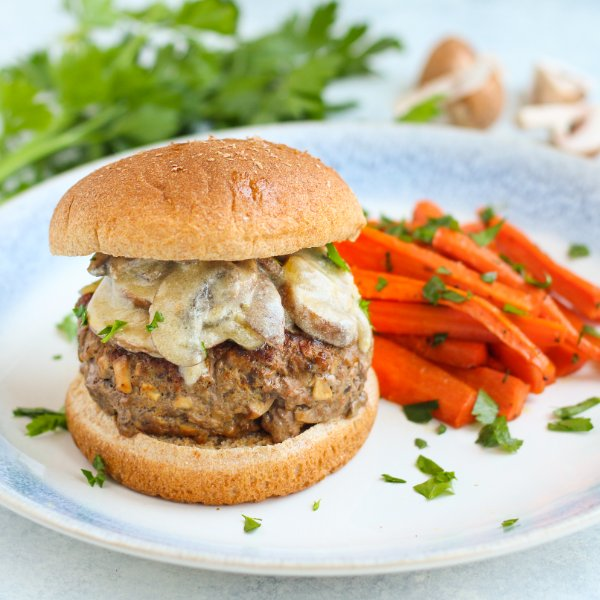

"Beef Stroganoff" Mushroom Burgers with Honey-Parsley Roasted Carrots

Total Time
35 min
Nutrition (Per Serving)
690.5 kcalCalories
47.9 gProtein
49.7 gCarbs
34.9 gFat
Full nutrition table
| Calories | 690.5 kcal |
| Total fat | 34.9 g |
| Saturated fat | 11.2 g |
| Trans fat | 1.8 g |
| Cholesterol | 116.4 mg |
| Sodium | 476.9 mg |
| Carbohydrates | 49.7 g |
| Fiber | 8.8 g |
| Sugars | 19.2 g |
| Protein | 47.9 g |
| Potassium | 2252.1 mg |
| Calcium | 209.8 mg |
| Iron | 7.4 mg |
| Vitamin A | 51.2 IU |
| Vitamin C | 30.5 mg |
| Vitamin D | 11.9 IU |
Cookware
Ingredients
- 8 mediumcarrots
- 8 fl ozchicken or vegetable broth
- 2 lbcremini mushrooms
- 4 clovesgarlic
- 1 small bunchItalian (flat-leaf) parsley
- 1 ½ lblean ground beef
- ¼ cupplain Greek yogurt
- 4whole grain buns or rolls
- 1 mediumyellow onion
- all-purpose flour
- black pepper
- extra virgin olive oil
- honey
- salt
- Worcestershire sauce
Steps
- Preheat oven to 450°F.
- Wash and dry the fresh produce.8 medium carrots
2 lb cremini mushrooms
1 small bunch Italian (flat-leaf) parsley - Peel and trim carrots. Slice in half crosswise, then lengthwise into ½-inch thick sticks. Place in a large bowl along with oil, honey, salt, and pepper; toss to coat.4 tsp extra virgin olive oil
2 tsp honey
½ tsp salt
¼ tsp black pepper - Transfer carrots to a large baking sheet pan and spread out in a single layer. Place in the oven (it doesn't have to be fully heated) and roast until fork-tender, 20-25 minutes. (Reserve bowl for the next step.)
- Meanwhile, mince half the mushrooms and place in the reserved bowl. Thinly slice remaining mushrooms, place in a small bowl, and set aside.
- Add beef, Worcestershire, salt, and pepper to the bowl with the minced mushrooms; mix with your hands until well combined. Form the mixture into 4 equal-sized patties and place on a plate.1 ½ lb lean ground beef
1 tsp Worcestershire sauce
½ tsp salt
¼ tsp black pepper - Preheat a large skillet over medium-high heat.
- Once the skillet is hot, add the burger patties and cook, undisturbed, for 5 minutes. Flip patties and continue to cook until cooked through, 4-5 minutes more. Transfer to a clean plate, loosely cover with aluminum foil, and set aside. (Reserve skillet for later use.)
- Meanwhile, peel, halve, and thinly slice onion. Peel and mince garlic.1 medium yellow onion
4 cloves garlic - Return skillet to medium heat; add oil and swirl to coat the bottom. Add onion, garlic, and salt; cook, stirring occasionally, until the onion begins to soften, 3-4 minutes.2 tsp extra virgin olive oil
½ tsp salt - Add sliced mushrooms to the skillet and cook, stirring occasionally, until they begin to soften, 3-4 minutes.
- Meanwhile, shave parsley leaves off the stems; discard stems and mince the leaves.
- Sprinkle flour into the skillet and stir to combine. Add broth and bring to a simmer; continue to cook, stirring often, until the sauce thickens, 3-4 minutes.2 tsp all-purpose flour
8 fl oz (1 cup) chicken or vegetable broth - Once the sauce has thickened, remove from the heat. Add yogurt, Worcestershire, and half the parsley (reserving the rest for the carrots); stir to combine.¼ cup plain Greek yogurt
1 tsp Worcestershire sauce - Once the carrots are done, remove from the oven, sprinkle with reserved parsley, and toss to combine.
- Toast buns if desired.4 whole grain buns or rolls
- Place bottom half of each bun on a plate, then top with burgers and mushroom sauce. Close with the top half of the bun and serve with roasted carrots on the side. Enjoy!